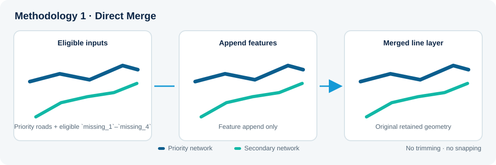

Method 01
Direct Merge
Retains all priority roads and appends eligible secondary roads without trimming or snapping. Original secondary geometries are preserved.
Best suited to: fast integration where retaining original geometry is important.